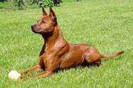

<table border="0" class="layout">
    <colgroup span="1"><col width="15%" span="1"></col><col width="25%" span="1"></col><col width="60%" span="1"></col></colgroup> 
    <tbody>
        <tr>
            <td valign="top">
                <div class="holster">
                    <div class="block_container s3 b-text b-static-text user_css_12816005438" id="e_127779817548">
                        <p><em><strong>Певунова Ольга Геннадьевна</strong></em></p>
                        <p>тел.8-905-782-28-38</p>
                        <p><strong>Заходите к нам в <a href="http://thaika.ru/">гости</a></strong></p>
                    </div>
                    
            </td>
            
                        <p><em><strong>Мельникова Софья, ,<br> питомник "ШОУЛАЙН МЕЛИН*С"<br>
                        <p>тел.8 925 176 69 79</p>
                        
                    </div>
                    <div class="block_container s3 b-image txt-center" id="e_1282815497168"><span></span></div>
                </div>
            </td>
            <td>
                <div class="holster">
                    <div class="block_container s3 b-text b-static-text user_css_12816005438" id="e_128281543337">
                        <p style="text-align: center;"><strong>Тайский Риджбек</strong></p>
                        <p style="text-align: justify;">Тайские риджбеки, как и люди, разные: гордые и независимые, веселые и брюзгливые, дисциплинированные и разгильдяи</p>
                        <p style="text-align: justify;"><strong><span style="color: #4b1606;">Достоинства</span></strong> Очень красивы, внешность экзотическая, необыкновенная шерсть (очень короткая и мягкая, как бархат), ридж на спине разной формы - тоже изюминка! Синий язык - удивительно, правда, чаще встречаются собаки с черными / синими пятнами на языке. Атлетично сложены, поразительно прыгучи.. Внимательность и настороженность помогали вовремя заметить и уйти от опасности. Очень элегантны, гармоничны и сбалансированы, выражено породны. Короткая шерсть, необыкновенно мягкая и приятная наощупь. Очень умеренная линька раз в год (февраль-март). В остальное время шерсти нет, как нет и слюней. Средний размер, умеренное потребление корма. Преданность только своей семье, очень высокий интеллект, сильная эмоциональная привязанность к семье, своему дому, своей территории, готовность защищать свою территорию и своего хозяина. Тайский риджбек небрехлив: лает только если на его территории произошло что-то необычное. Сможет постоять и за себя и за своего хозяина. Любит быть рядом с хозяином, при этом ненавязчив, несуетлив. Поддержит активные игры на прогулке и дома (аппортировка, игра с мячом или тарелкой), и полениться тоже любит! Ценит комфорт и домашний уют. Очень любит солнце и тепло. Чрезвычайно чистоплотен, избегает луж, грязи, не любит дождь и слякоть.</p>
                        <p style="text-align: justify;"><strong><span style="color: #4b1606;">Недостатки,</span></strong> которые, как известно, являются продолжением достоинств… Ловкость, сила и пронырливость, поразительная прыгучесть и атлетизм иногда доставляют неудобства (пройдет всюду и попадет всегда туда, куда хочет). Как и выраженная способность мыслить и действовать самостоятельно (что делать, интеллект-то высокий!). Настороженность и осторожность тоже плавно перетекают в недостатки! Выраженная территориальность (неуютно чувствуют себя в незнакомых местах), бывают пугливы, настороженное отношение ко всему новому и необычному. Требуется настойчивая социализация и ранняя дрессура, может быть очень упрямым, самолюбивым (свойственно молодым собакам), не выносит грубого обращения. Порой выраженный охотничий инстинкт (угаснет к 3 годам), могут уходить в лесу на дальний поиск. Эти собаки требуют внимания и понимания со стороны владельца. Пытаются держаться независимо, могут устроить Вам «праздник непослушания». Бывают задиристы, склонны к доминированию. Очень молодым собакам свойственны «подростковые комплексы»: пытаются самоутвердиться, переоценивают собственные силы и значимость, дерзость оборачивается неуверенностью и робостью. Идеальным домашним любимцем тайский риджбек становится к 3 годам (временя достижения физической и психической зрелости).</p>
                        <p style="text-align: justify;"><strong><span style="color: #4b1606;">Совет (будущим) владельцам </span></strong>Тайский риджбек необыкновенная собака. Но эта собака потребует от владельца знаний особенности породы, терпения, готовности уделить Вашей собаке достаточное количество внимания и времени ( из ничего ничего и получится), пока ваш таец не пройдет все критические этапы развития, т.е. не станет взрослым. Взрослый тайский риджбек будет хорошо чувствовать себя и при двухразовой прогулке по 30-40 минут в день (но чем больше гулять, тем лучше!), более длительная прогулка в выходные. Тайскому риджбеку нужны косточки для собак, игрушки, лучше пищащие мячики, а главное, Ваше внимание и любовь.</p>
                        <p style="text-align: justify;"><strong><span style="color: #4b1606;">Каков же характер тайского риджбека? </span></strong>Это очень милые семейные собаки, чрезвычайно привязчивые к своей семье и нежные необычайно.</p>
                        <p style="text-align: justify;">К чужим относятся недоверчиво, привыкают долго. Например, Тая активно облаивает мою подругу, вместе с которой мы ежевечерне гуляем в парке, всякий раз, когда она приходит к нам в гости, как бы показывая, что в этом доме она все-таки чужая. Незнакомых гостей она сначала интенсивно облаивает, но через некоторое время начинает крутиться вокруг них, выклянчивая лакомый кусочек, ласкаться, забирается на колени.</p>
                        <p style="text-align: justify;">Тайские риджбеки – собаки с выраженным охотничьим инстинктом: в парке, в лесу выискивают белок по следам, могут и поймать. Во дворе будут попытки ловить кошек (это необходимо пресекать). Могут далеко уходить от хозяина в парке или в лесу: это естественно, ведь иначе не было бы охоты. В Таиланде они ловили хозяевам мелких грызунов, минихрюшек, зазевавшихся птичек. Поскольку у нас и в Европе охотничьего применения для них не предвидится, охотничий инстинкт надо гасить.</p>
                        <p style="text-align: justify;">Взрослый тайский риджбек в квартире ведет себя очень спокойно, любит спать в кресле или в постели хозяина (а уж достоинство это или недостаток, определяет хозяин). Очень любит тепло и комфорт, не любит купаться даже в жаркую и гулять в дождливую, слякотную погоду. Все лужи на прогулке обходят или перепрыгивают, поэтому сильно не пачкаются.<br /><br />К другим домашним питомцам тайский риджбек относится снисходительно. Нашего попугая жако Тая несколько раз ловила в полете, но хватала очень аккуратно, не поранив и не напугав жако, так что он ей это простил.</p>
                        <p style="text-align: justify;">На прогулке активны, неутомимы. Тайцы очень спортивные собаки, прекрасно прыгают, очень быстро бегают, поражают своей грацией и изяществом движений.</p>
                        <p style="text-align: justify;">Поскольку тайские риджбеки веками жили в сельской местности и относятся к собакам примитивного (первобытного) типа, то им свойственно настороженное отношение ко всему новому и для него пока неизвестному. Тайский риджбек очень осмотрителен. И очень любопытен. Увидев что-то новое и пугающее, будет долго смотреть с расстояния, подходить очень осторожно, долго изучать, не таится ли здесь опасность. Любит гулять в хорошо знакомой местности, которую рассматривает как свою территорию. К сожалению, может обходить территорию, которую считает своей, без Вас. Будьте внимательны на прогулках, постоянно напоминайте своему другу колбаской или еще чем, что он гуляет не один, а с Вами.</p>
                        <p style="text-align: justify;">Очень неспокойно тайский риджбек чувствует себя в людных местах, среди толпы в незнакомом месте. Нуждается в ранней социализации: щенка следует всюду брать с собой: в гости, в магазин, приучать к приходу незнакомых ему людей в ваш дом, ездить с вами в общественном транспорте, очень действенный тренинг – посещение рынков и вокзалов, прогулки во время народных гуляний (естественно, на поводке) и т.п.</p>
                        <p style="text-align: justify;">Тайский риджбек очень сообразительная собака, легко обучается, но послушанием не отличается и торопиться выполнить ваши команды не будет. Короче, под козырек не берет, как ризеншнауцер или немецкая овчарка. Не терпит грубого обращения.</p>
                        <p style="text-align: justify;">Тайский риджбек нуждается в общении и прогулках. Хорошо, если рядом с Вашим домом будет большой сквер или парк, где он сможет побегать без поводка и поиграть с другими собаками. Вряд ли стоит заводить эту породу, а ровно и другие породы тем, у кого в семье маленькие дети до 6 лет. Жизнь на поводке в центре города тоже не сделает тайского риджбека счастливым, разве что три-четыре раза в неделю Вы будете выезжать в парк, где Ваша собака набегается вволю.</p>
                        <p style="text-align: justify;">Тайский риджбек с удовольствием составит Вам компанию во время пеших или велосипедных прогулок по парку, лесу. Таин папа Филоу успешно занимается аджилити и танцами. Но следует помнить, что тайцы – не бордер-колли и не рабочая собака, не стоит требовать от них многого. Зато рядом с Вами будет очень необычная, элегантная, поразительно грациозная собака с экзотической внешностью, необычайно нежная, одаривающая своим вниманием только Вас и членов Вашей семьи. Любуйтесь ею, наслаждайтесь ее обществом, теплом и той любовью, которой она ответит на Вашу заботу.</p>
                        <p style="text-align: justify;"> </p>
                    </div>
                </div>
            </td>
        </tr>
    </tbody>
</table>​
